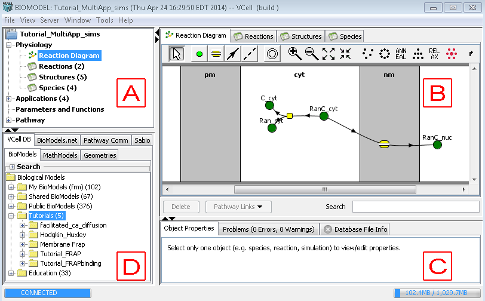

Virtual Cell 5.3 has a redesigned easy-to-use GUI, with improved mechanisms to add species, reactions, and model structures. The document view displays the model at a glance, with intuitive tabs and tree structures that allows the user to navigate with ease.

The VCell document window has a top-level menu that allows the user to perform various operations on the VCell document, such as save or export a model, share a model for collaborative viewing, etc. The document window has 4 panels that present the user with a canvas to browse, create and maintain a model.
Navigation panel (Panel A)
The top left panel is the Navigation panel that allows the user to navigate the currently open model. The tree structure displays the physiology (reactions, compartments, species diagrams and tables), applications, parameters and functions and pathway database related information. Clicking on any item in the tree will display the item in the View panel (panel B, top right panel). For example, choosing the "Reaction" item under "Physiology" will open the table of reactions in the model in the 'View' panel or choosing "Reaction Diagram" in the navigator tree will display the model reaction network in the 'View' panel.
Clicking on the top level entity of the navigation tree in the "Navigation" panel (typically represented by the name of the VCell model) displays a summary of the model in the "View" panel. The summary information contains such details as the model's name, owner, last modified date, permissions to view the model (also refer to File -> Permissions), and a brief summary of the applications in the model.
View panel (Panel B)
The top right panel in the figure above is the 'View' panel. This panel has the following 4 tabs that allow the user to create a physiological model before he/she can run simulations. Reaction Diagram is used to view the reaction network and add species or reactions and fluxes to the model. Reactions lists the reactions in the model in a tabular form. The user can also add/delete reactions here. Structures lists the compartments in the model as a table. Compartments can also be added or deleted in this table. Species lists the species of the model in a table.
Properties panel (Panel C)
This is the panel on the bottom right of the VCell document window. This panel contains the following 3 tabs. The Object Properties tab displays the properties of any entity (species, reaction, structure) selected in any of the tabs in the "View" panel (refer to section Properties Pane) panel. The Problems tab lists the errors and warnings in the model that has been created. The user is not allowed to save the model if there are any errors. The Database File Info tab provides a brief database summary of the selected model in the "Database" panel.
Database panel (Panel D)
This is the bottom left panel in the figure above. This panel allows the viewer to view/select models from different database sources. This panel has the following 3 tabs. The VCell Database tab shows the models stored in the VCell database. This selection shows another set of 3 tabs (BioModels, MathModels, Geometries), which display models of the different VCell document types stored in the VCell database. Refer to the section on VCell Database for further information. The Biomodels.net tab shows models from the Biomodels database, which is a database of annotated published models in SBML that can be imported into the Virtual Cell. The Pathway Commons tab shows the list of pathways that can be mined from the Pathway Commons database. Please refer to sections Pathway Commons Database and Biological Pathways.